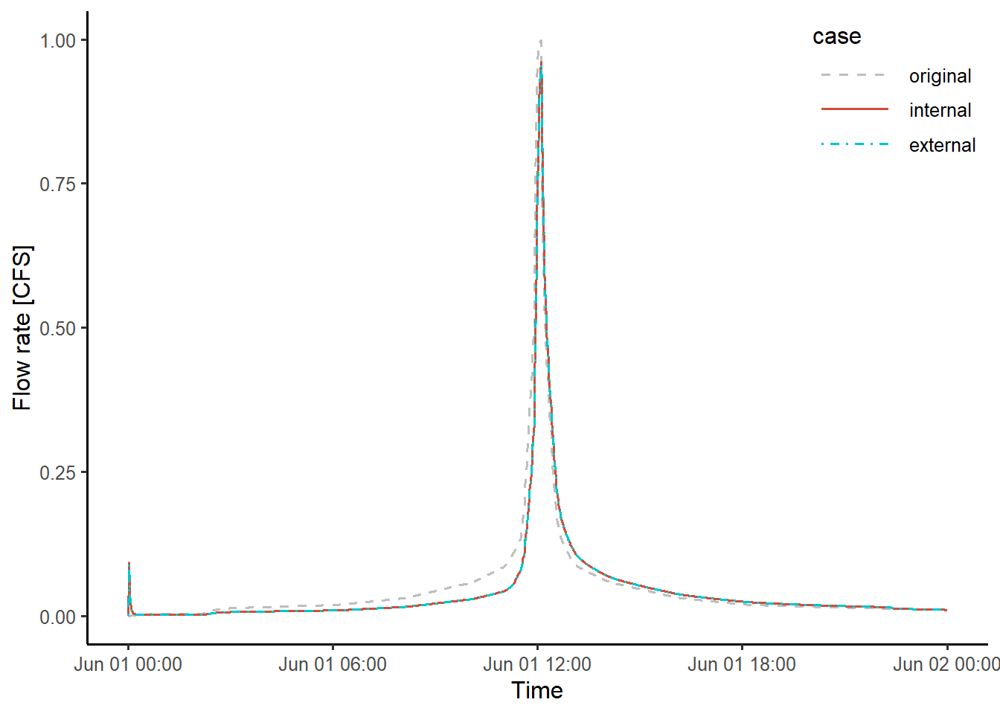

In this example, the hydrological performance of green roofs in a simple catchment is examined. The green roofs are first modeled externally using the SWMM’s green roof module, and then the resulted hydrograph is coupled with the SWMM catchment model using the functions provided by the toolbox. The result is then compared to that obtained by modeling green roofs internally using SWMM. The results of two cases are expected to be the same, as the toolbox is designed to update the parameters to accommodate the external modeling of green roofs and the same green roof model is used in both cases. The simulations are driven by a 60 mm SCS type III 24-hr design storm.
The paramater of the original subcatchment before installing green roofs is stored in raw_catchment.inp. The modeled catchment only has a 0.5 acre impervious catchemnt, which drains runoffs from the catchment to the out. The catchment can be ploted by executing the code chunk that uses functions provided by swmmr.
# Load toolbox functions
source("interface_functions.R")
inp <- read_inp("./example/example1/raw_catchment.inp")
# Functions provided in swmmr are used for visulization
sub_sf <- subcatchments_to_sf(inp)
lin_sf <- links_to_sf(inp)
jun_sf <- junctions_to_sf(inp)
rg_sf <- raingages_to_sf(inp)
lab_coord <- sub_sf %>%
sf::st_centroid() %>%
sf::st_coordinates() %>%
tibble::as_tibble()
lab_rg_coord <- rg_sf %>%
{sf::st_coordinates(.) + 500} %>% # add offset
tibble::as_tibble()
sub_sf <- dplyr::bind_cols(sub_sf, lab_coord)
rg_sf <- dplyr::bind_cols(rg_sf, lab_rg_coord)
ggplot() +
# first plot the subcatchment and colour continously by Area
geom_sf(data = sub_sf, aes(fill = Perc_Imperv), color = "black", alpha = 0.8) +
scale_fill_gradient(low = "lightgreen", high = "indianred4") +
geom_sf(data = lin_sf, colour = "blue", size = 1) +
geom_sf(data = jun_sf, colour = "grey20", size = 2) +
geom_label(data = sub_sf, aes(X, Y, label = Name), size = 3) +
labs(x = "x-axis",
y = "y-axis",
fill = "Imperviousness\n(%)") +
scale_fill_gradient(limits = c(0,100), low = "#009E73", high = "#D16103") +
theme_bw(base_size = 10)The run_swmm function provided by swmmr is used execute SWMM simulation. The outflow is store in test.txt in the current the current working directory, and is stored in the raw_outflow variable using the read_outflow function as defined in the code chunk below.
run_swmm("./example/example1/raw_catchment.inp")
read_outflow <- function(fpath = "outflow.txt"){
# Purpose: read simulated outflow hydrograph
# Input:
# fpath = file path of the simulated outflow, which is defined in the [FILES] tabe in SWMM input file
# Output:
# a tibble stores the outflow hydrograph
read_table(fpath, skip = 7) %>%
transmute(datetime = ymd_hms(paste(Year, Mon, Day, Hr, Min, Sec)),
flow = FLOW) %>%
arrange(datetime)
}
raw_outflow <- read_outflow()Assume the green roofs have a surface area of 0.25 acre (i.e., half of the catchment area). The SWMM model for the green roofs is SWMM_green_roof.inp. The outflow hydrograph from green roofs can be obtained using the run_swmm and read_outflow function.
run_swmm("./example/example1/SWMM_green_roof.inp")
SWMM_green_roof_outflow <- read_outflow()The hydrograph is then save in GR_outflow.txt using write_csv, and is later used as input flows to SWMM.
fname = "./example/example1/GR_outflow.txt"
write_csv(SWMM_green_roof_outflow, path = fname)The catchment with green roofs is modeled using SWMM. The model is stored in SWMM_catchment_w_GR.inp. The simulation can be execuated using the following code chunk. The simulated outflow is stored in the SWMM_catchment_w_GR_outflow varible.
run_swmm("./example/example1/SWMM_catchment_w_GR.inp")
SWMM_catchment_w_GR_outflow <- read_outflow()The information the toolbox needed for coupling GR_outflow.txt and raw_catchment.inp is stored in the file GI_plan.csv. It can be read using the read_GI_plan function in the toolbox.
GI_plan <- read_GI_plan("./example/example1/GI_plan.csv")
print(GI_plan)## # A tibble: 1 x 6
## inflow_path outlet subcatchment_name per_area_rep imp_area_rep width_adj
## <chr> <chr> <chr> <dbl> <dbl> <dbl>
## 1 C:/Users/User/Documents/swmm_gi_toolbox/example/example1/GR_outflow.txt 0 S1 0 0.25 115Six variables are defined.
The outflow hydrograph are imported to SWMM using routing interface files. The interface file can be created using the write_routing_interface_file function provided by the toolbox.
# read the SWMM input file of the original catchment using swmmr::read_inp
inp <- read_inp("./example/example1/raw_catchment.inp")
# write routing interface file
routing_interface_path <- "./example/example1/routing_interface.txt"
write_routing_interface_file(GI_plan, inp, routing_interface_path)## [1] TRUEwrite_routing_interface_file returns TRUE is the routing interface is created successfully. write_routing_interface_file takes three arguments.
read_GI_plan function. See explanations for read_GI_plan above.swmmr::read_inp.SWMM input file needs to be modified to accommodate the external modeling of green roofs. The modify_inp function provided by the toolbox can modify the inp object of the original catchment according to GI_plan.
new_inp <- modify_inp(GI_plan, inp, routing_interface_path)modify_inp returns the inp object correspond to the catchment after GIs are modeled externally. It takes three arguments, which are the same as in the write_routing_interface_file function. See explanations above.
The modified SWMM input file can then created and execuated using the write_inp and run_swmm fucntions provided by swmmr.
# write new input file
write_inp(new_inp, file = "./example/example1/test.inp")
# run simulation
run_swmm("./example/example1/test.inp")
# read outflow hydrograph
coupled_outflow <- read_outflow()The two simulated outflow hydrographs, SWMM_catchment_w_GR_outflow and coupled_outflow, are supposed to be the same. The following code chunk produces a figure that compares the hydrographs of the original catchment and the catchment with green roofs modeled internally and externally.
# create a tibble that stores the outflow hydrographs of three cases
# convert to long form for ploting
hydrographs <- tibble(
datetime = raw_outflow$datetime,
original = raw_outflow$flow,
internal = SWMM_catchment_w_GR_outflow$flow,
external = coupled_outflow$flow) %>%
gather(case, value, -datetime) %>%
mutate(case = factor(case, levels = c("original", "internal", "external"))) %>%
filter(datetime <= ymd_hm("2020-06-02 00:00"))
# plot in the same figure, different cases are map to different colors and linetypes
ggplot(hydrographs, aes(datetime, value, linetype = case, color = case)) +
geom_line(size = 0.65) +
scale_color_manual(values = c("grey", "tomato3", "turquoise3")) +
scale_linetype_manual(values = c("dashed", "solid", "dotdash"))+
labs(x = "Time",
y = "Flow rate [CFS]") +
theme_classic(base_size = 12) +
theme(legend.position = c(1,1),
legend.justification = c(1,1),
legend.key.width = unit(1.5, "cm"))
As expected, the hydrographs obtained for internal and external modeling cases are almost the same. This confirms the code worked as expected, i.e., the externally modeled outflow from green roofs are correctly written into the routing interface file, and the SWMM model parameters are correctly adjusted to represented the catchment areas without green roofs.
The difference in peak flow of the two modeling methods is -0.003 CFS, or -0.309%, and in runoff volume is -0.5 cubic feet, or -0.014%. The very small differences are mainly caused by rounding error in computation and file processing.